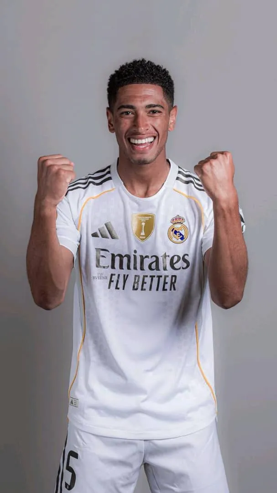
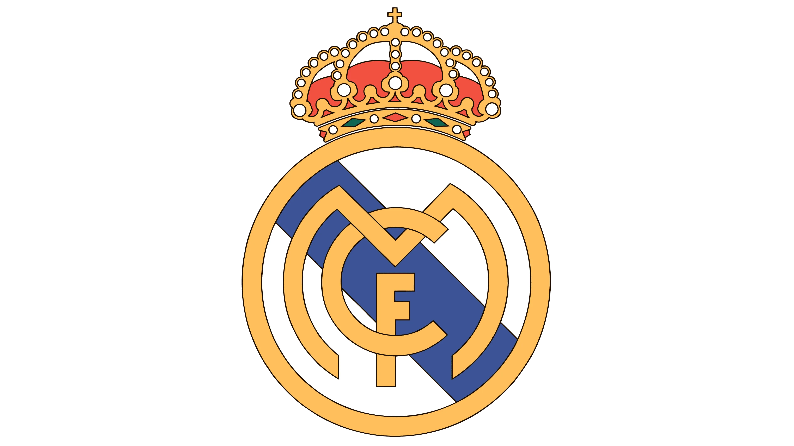
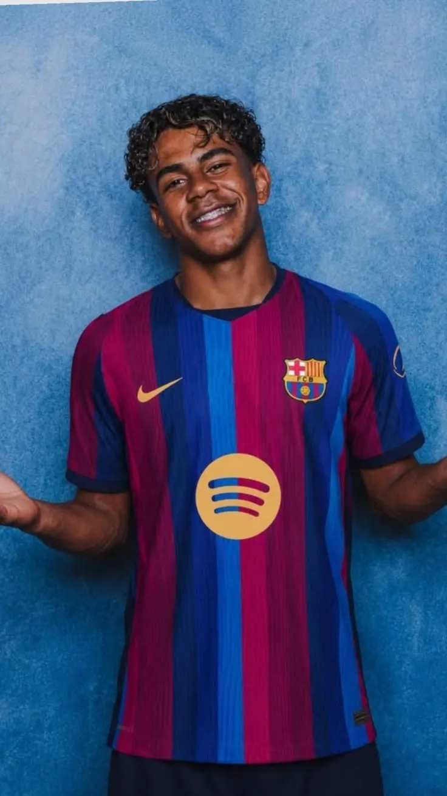

Interlude 01Le débat continue90:00
Une rivalité affectueuse le Clasico familial
Papa, il y a quand même
une chose sur laquelle nous n'arrivons toujours pas à nous mettre d'accord…


REALToi, tu as choisi le Real Madrid… et nous, une bonne partie d'entre nous a choisi le Barça !
Mais finalement, ce n'est pas grave… parce qu'on veut encore vivre avec toi beaucoup de Clasicos, beaucoup de débats, beaucoup de chambrages et surtout beaucoup de souvenirs.
Alors aujourd'hui, exceptionnellement…
HALA MADRID !
Profite bien de cette victoire… parce que c'est ta seule victoire du classico cette saison !
Papa Papy, on t'aime… même si tu supportes le Real.
